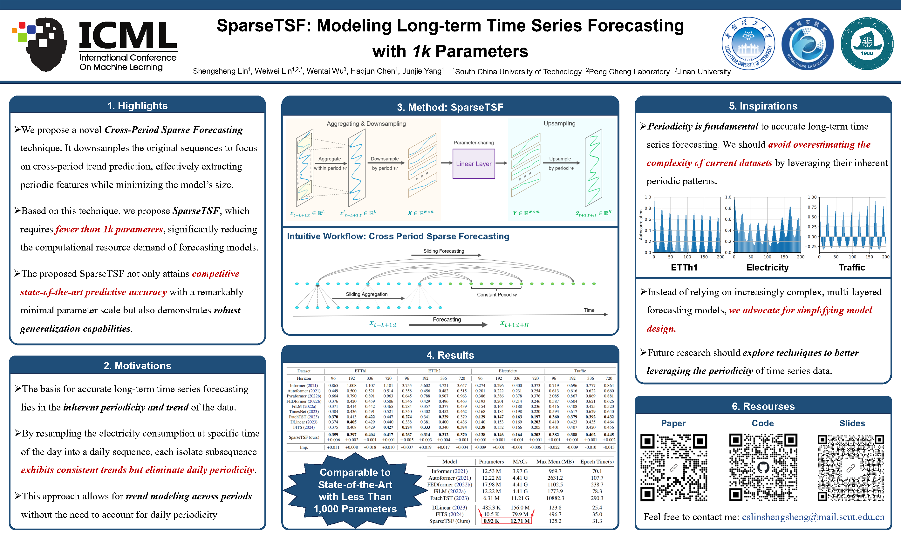
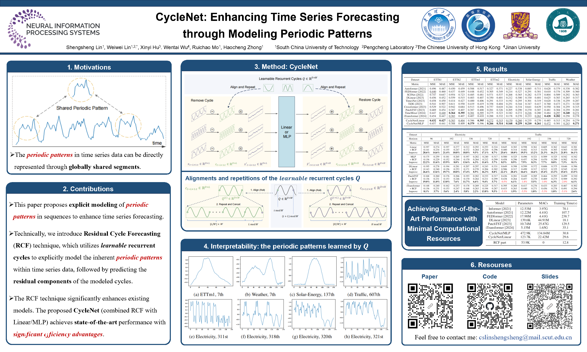
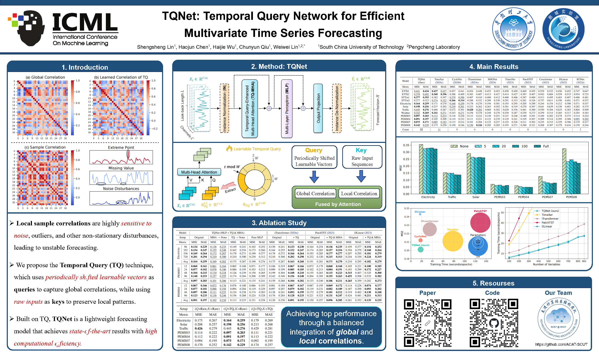

About
Shengsheng Lin
Shengsheng Lin (林升升) is a Ph.D. student in Computer Science at South China University of Technology and is expected to graduate in June 2027. He is advised by Prof. Weiwei Lin.
Research interests
LLM Post-Training
Code generation · Reinforcement learning · Verifiable rewards · Multi-expert distillation
Time Series Forecasting
Efficient architectures · Periodicity-aware learning · Multivariate modeling
Experience
Industry and Engineering Practice
Tencent · WXG
Jun. 2026 - Sep. 2026
LLM Coding Post-Training Intern, Mini Program Team
- Training. Conducted AI coding model post-training for generating complete WeChat Mini Programs from a single natural-language request, advancing CPT, agentic SFT, and agentic RL. Built an end-to-end training workflow for interactive greeting card generation, spanning data production, agent construction, verifier design, model training, and benchmark evaluation.
- Data. Synthesized user requests, generated and quality-filtered training data, and designed curricula around task difficulty and model capabilities. Refined data selection criteria for training.
- Verification. Improved RLVR verifiers and reward design through requirement review, code review, runtime functional checks, and visual assessment. Addressed incomplete functionality despite successful compilation and reward signals misaligned with user experience, guiding further training iterations.
- Model fusion. Used multi-teacher on-policy distillation (MOPD) to combine five specialists across AI coding, user agents, and Mini Program usage into a single model, achieving near-specialist performance in each domain.
Didi · MPT
Dec. 2025 - Jun. 2026
Elite Program Algorithm Intern, Supply-Demand Scheduling Strategy Team
- Algorithms and models. Optimized SparseTSF-based forecasting models for long-term ride-hailing supply and demand across a nationwide regional grid, addressing short-term fluctuations, multi-scale periodicity, and dependencies on external factors. Improved forecasting accuracy on core business metrics by 7%, with 10x fewer parameters and 5x faster training.
- Training infrastructure. Optimized the training pipeline with distributed data parallelism (DDP), mixed precision, and the Muon optimizer, reducing training time on tens of billions of observations from days to hours.
- Dataset. Built a ride-hailing dataset for open-source release covering 200+ spatial areas and four years of historical data, capturing spatiotemporal coupling, multi-scale periodicity, and external drivers.
- Benchmark. Established a ride-hailing supply-demand forecasting benchmark with 30+ models spanning univariate, multivariate, exogenous-variable, and time series foundation models.
Tencent · TEG
Jul. 2021 - Sep. 2021
Backend Development Intern, R&D Management Department
Developed and maintained Go APIs for scheduled tasks based on business requirements, and built Cobra-based command-line tools to unify task management.
Selected Papers
Representative Publications


SparseTSF: Modeling Long-term Time Series Forecasting with 1k Parameters
- Motivation. Investigates how far long-term forecasting can be simplified by exploiting periodic structure, without relying on large models.
- Method. Introduces cross-period sparse forecasting, downsampling sequences into period-aligned subsequences to separate periodic structure from trend prediction.
- Results. Achieves competitive accuracy with fewer than 1,000 parameters in the reported configurations, with further experiments showing generalization under limited training data, low-quality observations, and cross-domain transfer. Subsequently applied to ride-hailing forecasting at Didi.


CycleNet: Enhancing Time Series Forecasting through Modeling Periodic Patterns
- Motivation. Examines how explicitly learning recurring patterns can improve long-horizon forecasting beyond what is captured within individual input windows.
- Method. Introduces Residual Cycle Forecasting (RCF), learning channel-specific cycles shared across samples and using a linear layer or shallow MLP to predict the remaining residuals.
- Results. Delivers strong forecasting performance with a lightweight architecture. RCF also serves as a plug-in component, improving results for existing forecasters such as PatchTST and iTransformer in the reported experiments.


TQNet: Temporal Query Network for Efficient Multivariate Time Series Forecasting
- Motivation. Addresses unreliable inter-variable correlations estimated from individual input windows, where noise, missing values, and outliers can distort dependencies.
- Method. Introduces Temporal Query, using periodically shifted learnable queries together with input-derived keys and values to combine global correlation patterns with local observations.
- Results. Pairs a single attention layer with a shallow MLP, achieving strong overall results across 12 real-world datasets while approaching the measured efficiency of linear forecasters in the evaluated settings.


SegRNN: Segment Recurrent Neural Network for Long-Term Time Series Forecasting
- Motivation. Revisits RNNs for long-term forecasting by addressing excessive recurrent steps and error accumulation in recursive decoding.
- Method. Combines segment-wise encoding with Parallel Multi-step Forecasting (PMF), processing subsequences rather than individual time points and predicting future segments in parallel.
- Results. Demonstrates competitive forecasting with a simple GRU-based architecture. The arXiv study reports over 78% lower average training time and 82% lower average peak GPU memory than PatchTST in its efficiency comparison.
Education
Academic Training

South China University of Technology
Sep. 2022 - Jun. 2027 (expected)
Ph.D. in Computer Science
Advisor: Prof. Weiwei Lin
Honors: National Scholarship; President Scholarship, SCUT
South China University of Technology
Sep. 2018 - Jun. 2022
B.E. in Computer Science
Honors: National Scholarship; Outstanding Student Cadre, SCUT
Awards
Honors
- National Scholarship (Ph.D. Student) | 博士生国家奖学金
- President Scholarship, South China University of Technology | 华南理工大学校长奖学金
- National Scholarship (Undergraduate) | 本科生国家奖学金
- Gold Award, China International College Students' Innovation Competition | 中国国际大学生创新大赛金奖